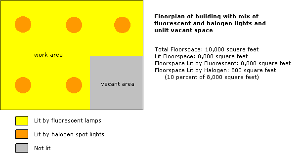
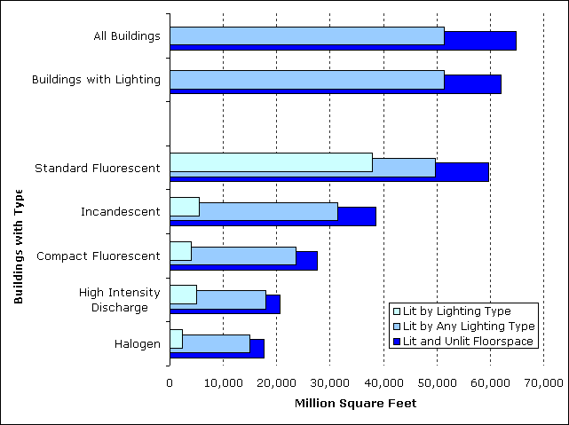
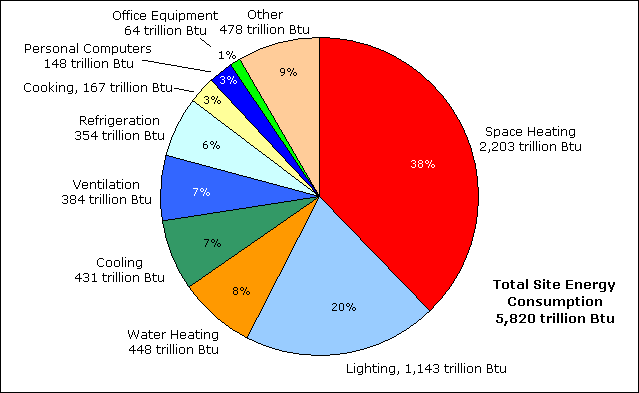
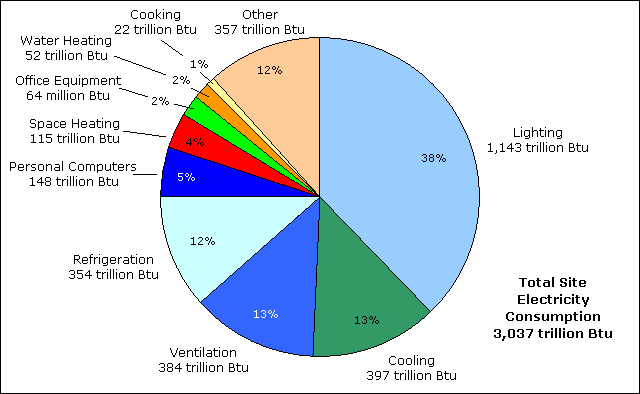

Introduction
Lighting is a major consumer of electricity in commercial buildings and a target for energy savings through use of energy-efficient light sources along with other advanced lighting technologies. The Commercial Buildings Energy Consumption Survey (CBECS) collects information on types of lighting equipment, the amount of floorspace that is lit, and the percentage of floorspace lit by each type. In addition, CBECS data are used to model end-use consumption, including energy consumed for lighting in commercial buildings.
CBECS building characteristics data can answer a wide range of questions about lighting from the most basic, “How many buildings are lit?” to more detailed questions such as, “How many office buildings have compact fluorescent lamps and how much area do they illuminate?”
CBECS collects information on 5 types of lamps:
These 5 types have different lighting characteristics. Fluorescent lamps are more energy efficient and last longer than incandescent lamps or halogen lamps (a type of incandescent lamp), but the latter two have light characteristics that may be preferred in some settings. High intensity discharge lamps are energy efficient and are especially effective in illuminating large areas; in commercial buildings, they are primarily used in buildings with open, high-ceiling spaces (e.g., auditoriums or storage areas).
Measures of Lighting Use
The following table summarizes lighting data for all (non-mall) commercial buildings from the 2003 CBECS and the graphic in Figure 1 illustrates the differences between the measures of floorspace.
Table 1. Measures of Lighting by Type of Lighting, 2003
| Buildings (thousand) |
Total Lit and Unlit Floorspace (million sq. ft.) |
Total Lit Floorspace (million sq. ft.) |
Total Lit by Each Lighting Type (million sq. ft.) |
|
|---|---|---|---|---|
| All Buildings | 4,645 | 64,783 | 51,342 | NA |
| Buildings with Lighting | 4,248 | 62,060 | 51,342 | NA |
| Buildings with Lighting Equipment Types | ||||
| —Standard Fluorescent | 3,943 | 59,688 | 49,691 | 37,918 |
| —Incandescent | 2,184 | 38,528 | 31,489 | 5,556 |
| —Compact Fluorescent | 941 | 27,571 | 23,610 | 4,004 |
| —High Intensity Discharge | 455 | 20,643 | 17,913 | 4,950 |
| —Halogen | 565 | 17,703 | 14,999 | 2,403 |
| —Other | 8 | 269 | 244 | 6 |
| NA=Not applicable. Note: Data are for non-mall buildings. Source: Energy Information Administration, 2003 Commercial Buildings Energy Consumption Survey. |
||||
- The first column, “Buildings,” is a straightforward measure—each value is the number of buildings (as specified by the row category).
- The second column, “Total Lit and Unlit Floorspace” refers to total floorspace.
- The third column, “Total Lit Floorspace ” excludes the areas in buildings that are not lit.
- The fourth column, “Total Lit by Each Lighting Type” is the most restrictive floorspace measure and refers to only the area illuminated by the specified lighting equipment.
Figure 1. Illustration of floorspace measures.
Nearly all commercial buildings have some type of lighting (91 percent of buildings are lit) (Table 1). The majority of those without lighting are warehouses and vacant buildings. Standard fluorescent lamps are widely used—85 percent of commercial buildings use these lamps. Nearly half of buildings (47 percent) use incandescent lamps and just under one-third (30 percent) use compact fluorescent lamps.
The floorspace values of the third column of Table 1 exclude areas within lit buildings that are not illuminated (such as storage or maintenance areas) and we can compare the lighted areas with these data. However, these statistics tell us nothing about the actual coverage by each lighting type. In buildings with standard fluorescent lighting, for example, the floorspace that is illuminated by any type is 49,691 million square feet. Two different buildings that would contribute equally to this value are an office building where all space was completely lit with fluorescent lamps and a warehouse building of the same size that has a single small room with fluorescent lighting but the rest of the building—the warehouse space—is illuminated by high intensity discharge lamps. Both have fluorescent lighting and both are completely illuminated, but the value in the table tells us nothing of the amount of area lit by the fluorescent lamps.
To measure coverage by lighting type, we use the last data column of Table 1. (See Table L3 for more complete data for 2003.) Figure 2 illustrates the dramatic difference in lit floorspace between fluorescent lamps and the other types (compare the bars for "Lit by Lighting Type").
- Standard fluorescent lamps illuminate three-fourths of lit floorspace in buildings.
- Incandescent lamps are used by about half of lit buildings but illuminate just 11 percent of the total lit area.
- The other lighting types—compact fluorescent, high intensity discharge, and halogen—each illuminate less than 10 percent of lit floorspace.
Figure 2. Nearly all floorspace in commercial buildings is illuminated.
Note: Data are for non-mall buildings.
Source: Energy Information Administration, 2003 Commercial Buildings Energy Consumption Survey.
Energy Consumed by Lighting
Lighting is a significant consumer of energy in commercial buildings. Figure 3 shows total energy consumed by major energy sources by end use for commercial buildings in 2003. When we look at only electricity (Figure 4), we see that more electricity is consumed by lighting than any other individual end use.
Figure 3. One-fifth of total site energy is consumed by lighting in commercial buildings.
Note: Data are for non-mall buildings. Total consumption includes 4 energy sources: electricity, natural gas, fuel oil, and district heat. Site consumption excludes energy used to generate and transmit electricity.
Source: Energy Information Administration, 2003 Commercial Buildings Energy Consumption Survey, Table E1.
Figure 4. More site electricity is consumed for lighting than for any other end use.
Note: Data are for non-mall buildings. Site electricity excludes energy used to generate and transmit electricity.
Source: Energy Information Administration, 2003 Commercial Buildings Energy Consumption Survey, Table E3.
Lighting in Commercial Buildings
Introduction
Lighting and Principal Building Activity
Lighting and Building Size and Year Constructed
Changes in Lighting
Detailed lighting tables |
HTML |
Excel |
PDF |
|---|---|---|---|
| Table L1. Floorspace Lit by Lighting Type (Non-Mall Buildings), 1995 | |||
| Table L2. Floorspace Lit by Lighting Type (Non-Mall Buildings), 1999 | |||
| Table L3. Floorspace Lit by Lighting Type (Non-Mall Buildings), 2003 | |||
| Note: Excel version includes tab for relative standard errors (RSEs). |
Return to: CBECS Home Page
Specific questions may be directed to:
Alan Swenson
Alan Swenson
Date released: April, 2009